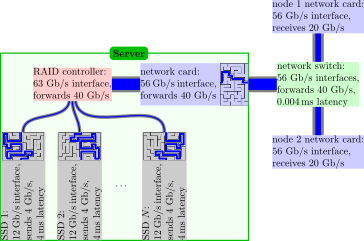

Usar recursos compartidos de manera responsable
Última actualización: 2026-06-02 | Mejora esta página
Tiempo estimado: 20 minutos
Hoja de ruta
Preguntas
- ¿Cómo puedo ser un usuario responsable?
- ¿Cómo puedo proteger mis datos?
- ¿Cómo puedo sacar de mejor manera grandes cantidades de datos de un sistema HPC?
Objetivos
- Describir cómo las acciones de una sola persona pueden afectar la experiencia de otros en un sistema compartido.
- Hablar sobre el comportamiento de un miembro considerado de un sistema compartido.
- Explicar la importancia de respaldar datos críticos.
- Describir los desafíos de transferir grandes cantidades de datos fuera de sistemas HPC.
- Convertir muchos archivos en un solo archivo de tipo archivo usando tar.
Una de las principales diferencias entre usar recursos HPC remotos y su propio sistema (por ejemplo, su computadora portátil) es que los recursos remotos son compartidos. Cuántos usuarios comparten el recurso en un momento dado varía de un sistema a otro, pero es poco probable que usted sea el único usuario conectado o usando un sistema así.
El uso extendido de sistemas de colas donde los usuarios envían trabajos a recursos HPC, es una consecuencia natural de la naturaleza compartida de estos recursos. Hay otras cosas que usted, como un miembro responsable de la comunidad, necesita considerar.
Sea Amable con los Nodos de Acceso
El nodo de acceso suele estar ocupado gestionando a todos los usuarios conectados, creando y editando archivos y compilando software. Si la máquina se queda sin memoria o capacidad de procesamiento, se volverá muy lenta e inutilizable para todos. Aunque la máquina está destinada a usarse, asegúrese de hacerlo responsablemente – de maneras que no afecten negativamente la experiencia de otros usuarios.
Los nodos de acceso son siempre el lugar correcto para lanzar trabajos. Las políticas del clúster varían, pero también pueden usarse para validar flujos de trabajo y, en algunos casos, pueden alojar herramientas avanzadas de depuración o desarrollo específicas del clúster. El clúster puede tener módulos que deben cargarse, posiblemente en un cierto orden, y rutas o versiones de bibliotecas que difieren de su computadora portátil, y realizar una prueba interactiva en el nodo principal es una manera rápida y confiable de descubrir y corregir estos problemas.
Los Nodos de Acceso son un Recurso Compartido
Recuerde, el nodo de acceso se comparte con todos los demás usuarios y sus acciones podrían causar problemas a otras personas. Piense cuidadosamente en las posibles implicaciones de ejecutar comandos que puedan usar grandes cantidades de recursos.
¿No está seguro? Pregunte a su amable administrador de sistemas (“sysadmin”) si lo que está considerando es adecuado para el nodo de acceso, o si hay otro mecanismo para hacerlo de forma segura.
Siempre puede usar los comandos top y ps ux
para listar los procesos que se están ejecutando en el nodo de acceso
junto con la cantidad de CPU y memoria que están usando. Si esta
verificación revela que el nodo de acceso está algo inactivo, puede
usarlo de forma segura para su tarea de procesamiento no rutinaria. Si
algo sale mal -- el proceso tarda demasiado o no responde – puede usar
el comando kill junto con el PID para terminar el
proceso.
Etiqueta del Nodo de Acceso
¿Cuál de estos comandos sería una tarea rutinaria para ejecutar en el nodo de acceso?
python physics_sim.pymakecreate_directories.shmolecular_dynamics_2tar -xzf R-3.3.0.tar.gz
Compilar software, crear directorios y descomprimir software son
tareas comunes y aceptables > para el nodo de acceso: las opciones #2
(make), #3 (mkdir) y #5 (tar)
probablemente están bien. Tenga en cuenta que los nombres de los scripts
no siempre reflejan su contenido: antes de ejecutar la opción #3, por
favor less create_directories.sh y asegúrese de que no sea
un caballo de Troya.
Ejecutar aplicaciones intensivas en recursos está mal visto. A menos
que esté seguro de que no afectará a otros usuarios, no ejecute trabajos
como #1 (python) o #4 (código MD personalizado). Si no está
seguro, pregunte a su amable sysadmin por consejo.
Si experimenta problemas de rendimiento con un nodo de acceso debe reportarlo al personal del sistema (normalmente a través de la mesa de ayuda) para que lo investiguen.
Pruebe Antes de Escalar
Recuerde que generalmente se le cobra por el uso en sistemas compartidos. Un simple error en un script de trabajo puede terminar costando una gran cantidad del presupuesto de recursos. Imagine un script de trabajo con un error que lo hace quedarse sin hacer nada durante 24 horas en 1000 núcleos o uno donde usted solicitó 2000 núcleos por error y solo usa 100 de ellos. Este problema puede agravarse cuando las personas escriben scripts que automatizan el envío de trabajos (por ejemplo, cuando se ejecuta el mismo cálculo o análisis sobre muchos parámetros o archivos diferentes). Cuando esto ocurre perjudica tanto a usted (porque desperdicia muchos recursos cobrados) como a otros usuarios (que quedan bloqueados de acceder a los nodos de cómputo inactivos). En recursos muy ocupados usted puede esperar muchos días en una cola para que su trabajo falle dentro de 10 segundos de iniciarse debido a un error tipográfico trivial en el script de trabajo. ¡Esto es extremadamente frustrante!
La mayoría de los sistemas proporcionan recursos dedicados para pruebas con tiempos de espera cortos para ayudarle a evitar este problema.
Pruebe Scripts de Envío de Trabajos que Usen Grandes Cantidades de Recursos
Antes de enviar una gran corrida de trabajos, envíe uno como prueba primero para asegurarse de que todo funcione como se espera.
Antes de enviar un trabajo muy grande o muy largo, envíe una prueba corta y truncada para asegurarse de que el trabajo inicia como se espera.
Tenga un Plan de Respaldo
Aunque muchos sistemas HPC mantienen respaldos, no siempre cubren todos los sistemas de archivos disponibles y pueden ser solo para propósitos de recuperación ante desastres (es decir, para restaurar todo el sistema de archivos si se pierde, en lugar de un archivo o directorio individual que haya eliminado por error). Proteger datos críticos de corrupción o eliminación es principalmente su responsabilidad: mantenga sus propias copias de respaldo.
Los sistemas de control de versiones (como Git) a menudo tienen opciones gratuitas en la nube (por ejemplo, GitHub y GitLab) que generalmente se usan para almacenar código fuente. Incluso si no está escribiendo sus propios programas, estos pueden ser muy útiles para almacenar scripts de trabajo, scripts de análisis y archivos de entrada pequeños.
Si está construyendo software, puede tener una gran cantidad de código fuente que compila para construir su ejecutable. Dado que estos datos generalmente se pueden recuperar volviendo a descargar el código o volviendo a ejecutar la operación de checkout desde el repositorio de código fuente, estos datos también son menos críticos de proteger.
Para mayores cantidades de datos, especialmente resultados
importantes de sus ejecuciones, que pueden ser irremplazables, debe
asegurarse de tener un sistema robusto para sacar copias de los datos
del sistema HPC siempre que sea posible hacia almacenamiento con
respaldo. Herramientas como rsync pueden ser muy útiles
para esto.
Su acceso al sistema HPC compartido generalmente será de tiempo limitado, por lo que debe asegurarse de tener un plan para transferir sus datos fuera del sistema antes de que su acceso termine. El tiempo requerido para transferir grandes cantidades de datos no debe subestimarse y debe asegurarse de planificar esto con suficiente antelación (idealmente, antes de empezar a usar el sistema para su investigación).
En todos estos casos, la mesa de ayuda del sistema que está usando debería poder proporcionar orientación útil sobre sus opciones de transferencia de datos para los volúmenes de datos que utilizará.
Sus Datos Son Su Responsabilidad
Asegúrese de entender cuál es la política de respaldos en los sistemas de archivos del sistema que está usando y qué implicaciones tiene esto para su trabajo si pierde sus datos en el sistema. Planifique sus respaldos de datos críticos y cómo transferirá datos fuera del sistema a lo largo del proyecto.
Transferir Datos
Como se mencionó anteriormente, muchos usuarios se enfrentan al desafío de transferir grandes cantidades de datos fuera de los sistemas HPC en algún momento (esto es más común en transferir datos hacia afuera que hacia adentro, pero el consejo de abajo aplica en cualquiera de los casos). La velocidad de transferencia de datos puede estar limitada por muchos factores diferentes, por lo que el mejor mecanismo de transferencia de datos a usar depende del tipo de datos que se están transfiriendo y de a dónde van los datos.
Los componentes entre el origen y el destino de sus datos tienen niveles de desempeño variados y, en particular, pueden tener capacidades diferentes con respecto al ancho de banda y la latencia.
El ancho de banda es generalmente la cantidad bruta de datos por unidad de tiempo que un dispositivo es capaz de transmitir o recibir. Es una métrica común y generalmente bien entendida.
La latencia es un poco más sutil. Para las transferencias de datos, puede pensarse como la cantidad de tiempo que toma sacar datos del almacenamiento y ponerlos en una forma transmisible. Los problemas de latencia son la razón por la que se recomienda ejecutar transferencias moviendo un número pequeño de archivos grandes, en lugar de lo contrario.
Algunos de los componentes clave y sus problemas asociados son:
- Velocidad de disco: Los sistemas de archivos en sistemas HPC suelen ser altamente paralelos, consistiendo en una gran cantidad de discos de alto rendimiento. Esto les permite soportar un ancho de banda de datos muy alto. A menos que el sistema remoto tenga un sistema de archivos paralelo similar, puede encontrar que su velocidad de transferencia está limitada por el desempeño del disco en ese extremo.
- Rendimiento de metadatos: Las operaciones de metadatos como abrir y cerrar archivos o listar el propietario o el tamaño de un archivo son mucho menos paralelas que las operaciones de lectura/escritura. Si sus datos consisten en un número muy grande de archivos pequeños puede encontrar que su velocidad de transferencia está limitada por operaciones de metadatos. Las operaciones de metadatos realizadas por otros usuarios del sistema también pueden interactuar fuertemente con las que usted realiza, por lo que reducir el número de tales operaciones que usa (combinando múltiples archivos en un solo archivo) puede reducir la variabilidad en sus tasas de transferencia y aumentar las velocidades de transferencia.
- Velocidad de red: El rendimiento de la transferencia de datos puede estar limitado por la velocidad de red. Más importante aún, está limitado por el tramo más lento de la red entre origen y destino. Si está transfiriendo a su computadora portátil/estación de trabajo, probablemente sea su conexión (ya sea por LAN o WiFi).
- Velocidad del firewall: La mayoría de las redes modernas están protegidas por algún tipo de firewall que filtra el tráfico malicioso. Este filtrado tiene cierta sobrecarga y puede resultar en una reducción del rendimiento de transferencia de datos. Las necesidades de una red de propósito general que aloja servidores de correo/web y equipos de escritorio son muy diferentes a las de una red de investigación que necesita soportar transferencias de datos de alto volumen. Si está tratando de transferir datos hacia o desde un host en una red de propósito general, puede encontrar que el firewall de esa red limitará la tasa de transferencia que puede alcanzar.
Como se mencionó anteriormente, si tiene datos relacionados que
consisten en un gran número de archivos pequeños se recomienda
encarecidamente empaquetar los archivos en un archivo archivo
más grande para almacenamiento y transferencia a largo plazo. Un solo
archivo grande hace un uso más eficiente del sistema de archivos y es
más fácil de mover, copiar y transferir porque se requieren
significativamente menos operaciones de metadatos. Los archivos de
archivo pueden crearse usando herramientas como tar y
zip. Ya vimos tar cuando hablamos sobre
transferencia de datos anteriormente.

Considere la Mejor Manera de Transferir Datos
Si está transfiriendo grandes cantidades de datos, deberá pensar en qué podría afectar su rendimiento de transferencia. Siempre es útil ejecutar algunas pruebas que pueda usar para extrapolar cuánto tiempo tomará transferir sus datos.
Diga que tiene una carpeta “data” que contiene alrededor de 10,000 archivos, una mezcla saludable de datos ASCII y binarios pequeños y grandes. ¿Cuál de las siguientes sería la mejor manera de transferirlos a HPC Carpentry’s Cloud Cluster?
scp -r data yourUsername@cluster.hpc-carpentry.org:~/rsync -ra data yourUsername@cluster.hpc-carpentry.org:~/rsync -raz data yourUsername@cluster.hpc-carpentry.org:~/-
tar -cvf data.tar data;rsync -raz data.tar yourUsername@cluster.hpc-carpentry.org:~/ -
tar -cvzf data.tar.gz data;rsync -ra data.tar.gz yourUsername@cluster.hpc-carpentry.org:~/
-
scpcopiará el directorio de forma recursiva. Esto funciona, pero sin compresión. -
rsync -rafunciona comoscp -r, pero preserva información del archivo como tiempos de creación. Esto es marginalmente mejor. -
rsync -razagrega compresión, lo cual ahorrará algo de ancho de banda. Si tiene una CPU potente en ambos extremos de la línea, y está en una red lenta, esta es una buena opción. - Este comando primero usa
tarpara unir todo en un solo archivo, luegorsync -zpara transferirlo con compresión. Con este gran número de archivos, la sobrecarga de metadatos puede perjudicar su transferencia, así que esto es una buena idea. - Este comando usa
tar -zpara comprimir el archivo, luegorsyncpara transferirlo. Esto puede funcionar de forma similar a #4, pero en la mayoría de los casos (para conjuntos de datos grandes), es la mejor combinación de alto rendimiento y baja latencia (aprovechando al máximo su tiempo y conexión de red).
- Sea cuidadoso con cómo usa el nodo de acceso.
- Sus datos en el sistema son su responsabilidad.
- Planifique y pruebe transferencias de datos grandes.
- A menudo es mejor convertir muchos archivos en un solo archivo de tipo archivo antes de transferir.